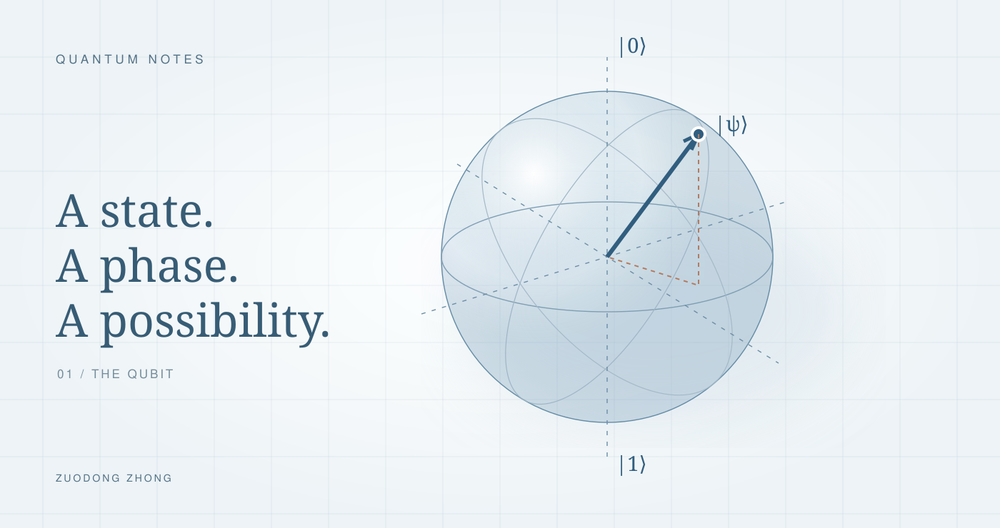
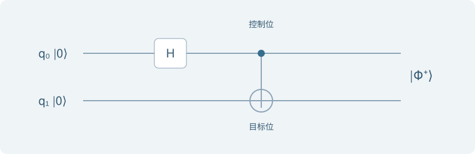

量子计算入门
从复振幅、相位到测量与纠缠
钟祚栋 / 学习笔记
Quantum Notes · 量子计算入门学习 01 ↗
#从一个问题出发
最近出于好奇，开始了解量子计算与量子神经网络。手写笔记记下了不少公式，但真正让我想继续追问的是：如果量子门都是线性变换，量子计算的特殊之处到底在哪里？
这组文章按自己的学习顺序整理：先理解复振幅、相位与测量，再看多个量子比特如何组成联合系统；接着用一个可以训练的最小电路理解 QNN，最后用 Grover 搜索看相位如何变成更高的答案概率。
#量子态：振幅不是概率
经典比特取值为 0 或 1。单个量子比特的纯态用两个复振幅表示：
∣ψ⟩=α∣0⟩+β∣1⟩=[αβ],α,β∈C.
其中 ∣0⟩=[1,0]T、∣1⟩=[0,1]T 是计算基态。对这个状态做 Z 基测量，Born 规则给出：
P(0)=∣α∣2,P(1)=∣β∣2,∣α∣2+∣β∣2=1.
这也是笔记里反复提醒自己的地方：先区分振幅与概率，再讨论叠加。复数的模长平方需要共轭。若 z=a+bi，则：
z∗=a−bi,∣z∣2=z∗z=(a−bi)(a+bi)=a2+b2.
Dirac 记号中的 bra 是 ket 的共轭转置，不是简单转置：
⟨ψ∣=(∣ψ⟩)†=[α∗β∗],⟨ψ∣ψ⟩=1.
因此，2∣0⟩+∣1⟩ 与 2∣0⟩−∣1⟩ 在 Z 基下都有一半概率得到 0、一半概率得到 1，但它们并不是同一个物理状态。只看一组测量概率，会丢掉相位信息。
#布洛赫球：两个角度与一种冗余
两个复振幅包含四个实参数。归一化约束去掉一个自由度；把整个状态乘上同一个 eiγ，不会改变任何测量概率，又去掉一个物理自由度。于是，忽略整体相位后，可以写成：
∣ψ⟩=cos2θ∣0⟩+eiϕsin2θ∣1⟩,0≤θ≤π,0≤ϕ<2π.
θ 是极角，ϕ 是方位角，也就是两个振幅之间的相对相位。布洛赫球坐标为：
x=sinθcosϕ,y=sinθsinϕ,z=cosθ=P(0)−P(1).
北极与南极分别是 ∣0⟩、∣1⟩；正负 X 方向分别是 ∣+⟩=(∣0⟩+∣1⟩)/2 与 ∣−⟩=(∣0⟩−∣1⟩)/2。在两极，ϕ 不再区分不同物理状态。
EXPERIMENT 01
把量子态放到布洛赫球上
拖动 θ 和 φ，再改变整体相位 γ。比较球上位置与三个测量基下的概率。
|ψ⟩ = cos(30°)|0⟩ + exp(i135°) sin(30°)|1⟩
⟨X⟩ = x−0.612
⟨Y⟩ = y0.612
⟨Z⟩ = z0.500
每个测量基下另一个结果的概率为 1 减去所示概率。图中显示的是理想纯态。
试着把 θ 设为 90∘：无论怎样改变 ϕ，Z 基的两个结果始终各占 50%；X、Y 基下的概率却在改变。再拖动整体相位 γ，所有测量概率都不变。这就是相对相位与整体相位的区别。
如果笔记中把实振幅写作 cosα 和 sinα，那么 z=cos2α−sin2α=cos2α，所以布洛赫球极角是 θ=2α。这解释了公式里为什么要除以 2。
#量子门：线性、酉性与顺序
理想封闭系统的量子门由酉矩阵 U 表示：
∣ψ′⟩=U∣ψ⟩,U†U=UU†=I.
线性性意味着 U(α∣a⟩+β∣b⟩)=αU∣a⟩+βU∣b⟩。酉性则保证内积不变：
⟨ψ′∣ψ′⟩=⟨ψ∣U†U∣ψ⟩=⟨ψ∣ψ⟩=1.
它既保持总概率，也存在逆变换 U−1=U†。可逆并不意味着同一个门再做一次就能撤销。只有某些门满足 U2=I；例如旋转门 Rz(ϑ) 的逆门通常是 Rz(−ϑ)。
四个常见的单 qubit 门
X=[0110],Y=[0i−i0],
Z=[100−1],H=21[111−1].
| 门 | 对基态的作用 | 可以怎样理解 |
|---|
| X | ∣0⟩↔∣1⟩ | 交换计算基态，类似 NOT。 |
| Y | ∣0⟩↦i∣1⟩；∣1⟩↦−i∣0⟩ | 翻转并引入相位。 |
| Z | ∣0⟩↦∣0⟩；∣1⟩↦−∣1⟩ | 改变叠加分量间的相对符号。 |
| H | ∣0⟩↦∣+⟩；∣1⟩↦∣−⟩ | 在 Z 基与 X 基之间切换。 |
X、Y、Z 在布洛赫球上分别对应绕相应坐标轴旋转 180∘，忽略整体相位。H 对应绕 (x+z)/2 方向的轴旋转 180∘，并不是绕 Y 轴旋转。
一个容易看错的例子是 Z∣1⟩=−∣1⟩。这里只多了整体相位，点仍在南极；而 Z∣+⟩=∣−⟩ 改变了相对相位，点从正 X 移到负 X。
电路从左向右执行，矩阵写在态的左侧，最右边的矩阵先作用。矩阵一般不交换，所以 HUH 不能直接把两端的 H 消去。例如：
HH∣0⟩=∣0⟩,HZH∣0⟩=∣1⟩.
#干涉：先加振幅，再算概率
线性性允许逐项计算量子门的作用；干涉则发生在不同路径对同一个最终结果贡献复振幅时。两个 H 门是最简单的例子：
H2∣0⟩=H2∣0⟩+∣1⟩=2(∣0⟩+∣1⟩)+(∣0⟩−∣1⟩)=∣0⟩.
最终 ∣1⟩ 的两个振幅贡献分别为 +1/2 和 −1/2，完全抵消。一般地：
∣A1+A2∣2=∣A1∣2+∣A2∣2+2Re(A1∗A2).
最后一项就是相位可以影响结果的原因。若在两个 H 门之间加入 P(ϕ)=diag(1,eiϕ)，则：
HP(ϕ)H∣0⟩=21+eiϕ∣0⟩+21−eiϕ∣1⟩,
P(0)=cos22ϕ,P(1)=sin22ϕ.
EXPERIMENT 02
让两条振幅路径相加
电路：|0⟩ → H → P(φ) → H。图中只画最终结果 0 的两项振幅，各自长度都是 1/2。
同相增强；反相抵消。
这里用 P 门让两条振幅路径更直观。它与 Rz(ϕ) 只差整体相位：P(ϕ)=eiϕ/2Rz(ϕ)。因此换成 Rz，最终测量概率相同。
上面的振幅相加针对没有留下可区分路径记录的相干演化。如果中途测量、保存了路径信息，就不能继续按同一个纯态叠加来计算。所谓“先加振幅”有明确的适用前提。
#测量：读出什么，取决于测量基
酉门与测量是两类操作。对一组正交归一基 {∣bi⟩}，理想投影测量给出：
P(i)=∣⟨bi∣ψ⟩∣2.
对于单 qubit 的秩一投影测量，若得到结果 i 且其概率非零，条件状态成为相应的 ∣bi⟩，忽略整体相位。不同测量基所区分的状态不同：
| 测量基 | 本征态 | 本征值 |
|---|
| Z | ∣0⟩, ∣1⟩ | +1, −1 |
| X | ∣+⟩, ∣−⟩ | +1, −1 |
| Y | ∣+i⟩, ∣−i⟩ | +1, −1 |
这里 ∣±i⟩=(∣0⟩±i∣1⟩)/2。仪器可把两个结果编码为经典 0/1，但标签不等于量子态。以 ∣+⟩ 为例，Z 基测量各得一半，X 基测量则一定得到“+”。
可以先施加 H 再做 Z 基读出，以获得 X 基测量的统计。若还要使测量后的状态回到原表象下的 ∣+⟩ 或 ∣−⟩，需把基变换逆回来；硬件实际留下什么状态还取决于读出实现。
测量也不会让 qubit 永远停在某个状态：读出后仍可施加门。例如从测得的 ∣0⟩ 出发，再做 H 就能重新得到 ∣+⟩。
一次结果与一个期望值
一次执行只得到一个结果。若要估计连续的输出，需要重新制备同一个输入、重新运行电路，再测量，重复很多次。对于 Z 可观测量：
⟨Z⟩=P(0)−P(1),⟨Z⟩=Sn0−n1,S=n0+n1.
这与在同一个已坍缩的 qubit 上反复测量不同。前者是在估计原电路的概率分布，也是后面 QNN 读出期望值时需要的步骤。
#多个 qubit：叠加不等于纠缠
两个 qubit 的状态空间是 C2⊗C2=C4。张量积负责组合系统，不自动产生纠缠。例如：
∣0⟩⊗∣+⟩=2∣00⟩+∣01⟩.
它虽然有两个基态的叠加，仍然是两个独立单 qubit 纯态的乘积。对联合纯态，不能分解为子系统纯态的张量积，才说明存在纠缠。Bell 态就是一个例子：
∣Φ+⟩=2∣00⟩+∣11⟩.
为什么这个 Bell 态不能分解？
假设它等于 (a∣0⟩+b∣1⟩)⊗(c∣0⟩+d∣1⟩)。比较四项系数：
ac=bd=21,ad=bc=0.
前两个非零系数要求 a、b、c、d 都非零，后两个系数却要求乘积为零，产生矛盾。这是纯态判据；混合态的可分性需要更一般的定义。
用 H 与 CNOT 制备 Bell 态
本文约定 ∣q0q1⟩ 左边是控制位，CNOT 的作用为 ∣a,b⟩↦∣a,b⊕a⟩。从 ∣00⟩ 出发：

图 1 · 根据手写笔记重画。上方 q₀ 为控制位，下方 q₁ 为目标位。
∣00⟩H⊗I2∣00⟩+∣10⟩CNOT2∣00⟩+∣11⟩.
H 之后仍是 ∣+⟩⊗∣0⟩；CNOT 之后才成为纠缠态。不过 CNOT 并不总能制造纠缠：CNOT∣00⟩=∣00⟩ 就是反例。IBM Quantum 的多系统课程也用乘积态与 Bell 态来说明这个区别。
相关的结果，还不足以证明纠缠
如果经典地掷一次硬币，一半时候制备 ∣00⟩，一半时候制备 ∣11⟩，Z 基测量同样只看到 00 或 11。这种经典混合的密度矩阵是：
ρmix=21∣00⟩⟨00∣+21∣11⟩⟨11∣.
它没有 Bell 纯态中的相干交叉项。两者在 Z 基下看起来相同，换到 X 基就能区分：
EXPERIMENT 03
纠缠，还是只有经典关联？
两侧总是选择同一个测量基。对比理论概率与独立重复制备后的采样计数。
联合测量的理论概率与采样计数| 结果 | 理论概率 | 采样计数 |
|---|
| 00 | | — |
| 01 | | — |
| 10 | | — |
| 11 | | — |
Bell 态在 Z 基和 X 基下均表现为完全相同的结果。
选择状态与测量基，再对独立制备的电路采样。
这个演示比较三个已知状态，展示“只看 Z 基关联”的不足；它不是一套通用的纠缠认证实验。纠缠也不能用来超光速传递信息：单独一侧的随机结果不能由另一侧自由控制。
对 n 个 qubit，一般纯态有 2n 个复振幅，去掉归一化与整体相位后有 2n+1−2 个实自由度；乘积纯态只需 2n 个。联合状态空间很丰富，但不能据此推断一次测量能读出全部振幅，或有纠缠就一定获得计算加速。